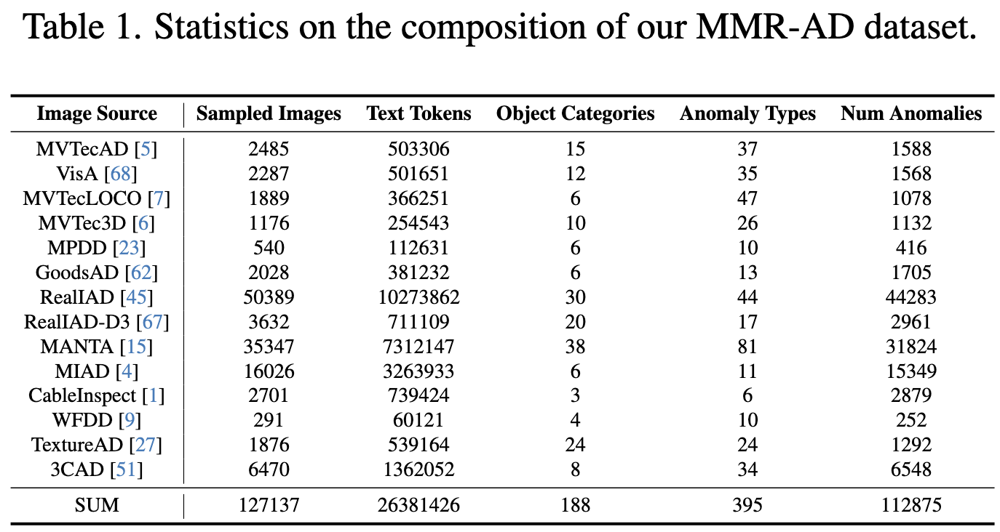
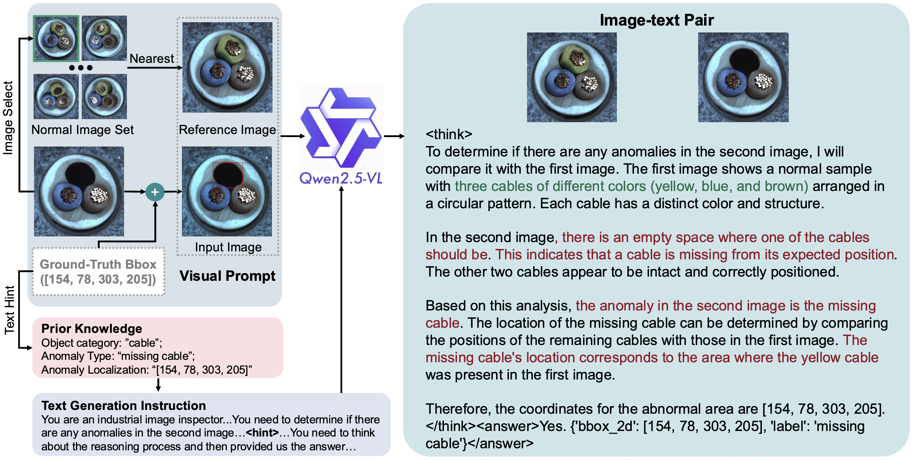
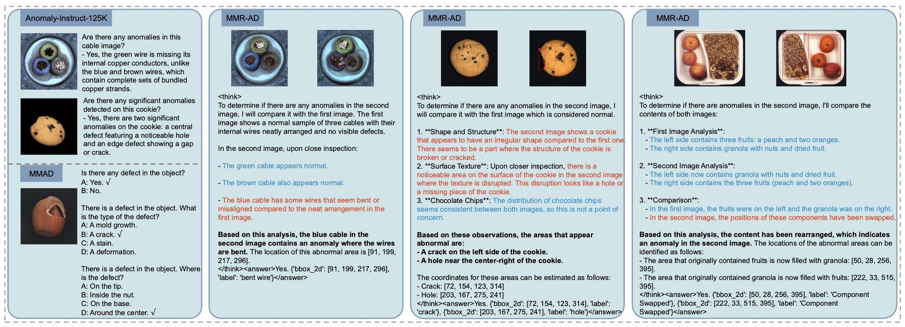
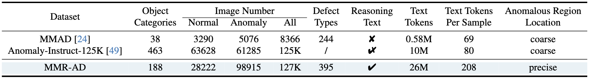

If you are interested in using the dataset, you can download it at  Hugging Face or
Hugging Face or  Model Scope.
Model Scope.
The MMR-AD dataset consists of multiple sub-datasets, each of which contains multiple classes. Taking bottle as an example, bbox-annos.json contains the original bbox annotations, text_annos.json contains the annotated text data, reference.json stores the reference image set for each image, ground_truth has mask annotations, test is divided into subdirectories according to anomaly types, and each subdirectory contains anomalous samples of the corresponding anomaly type, test_good contains the normal test samples, and train_good contains the normal training samples.
The original images in the MMR-AD dataset are from publicly available AD datasets. We generated text data for these images to construct a large-scale multimodal AD dataset. To ensure data scale and diversity, we extensively collected and sampled from 14 publicly available AD datasets (see Tab.1). Specifically, the datasets we employed include MVTecAD, VisA, MVTecLOCO, MVTec3D, MPDD, GoodsAD, RealIAD, RealIAD-D3, MANTA, MIAD, CableInspect, WFDD, TextureAD, and 3CAD. During processing these datasets, we found that many samples in these datasets are of low quality. Thus, to ensure the quality of our MMR-AD dataset, we manually checked all the data (~ 190K original images) and removed low-quality samples. In addition, to assist in subsequent text generation and also for evaluating the model's ability to accurately locate anomalies, we further manually annotated the bounding boxes and text labels for the anomalous regions.

We propose an automatic pipeline that can leverage current strong MLLMs to efficiently generate text data for each sample. Our pipeline leverages the visual reasoning capabilities of Qwen2.5-VL-72B to first generate elaborate reasoning data and then output the answer. We provide a spatially-aligned nearest sample as the normal reference sample for each input sample and instruct the Qwen2.5-VL-72B to generate AD-related text data by comparing the input image with the reference image. Since Qwen2.5-VL-72B is primarily trained on natural images and may struggle with industrial anomaly detection, we further provide additional visual and textual hints. For the visual hints, we plot a red bounding box for each anomalous region on the input image to make the model aware of the locations of anomalies. The textual hints are composed of the bounding box coordinates of the anomalous regions and corresponding anomaly types, such as "the location and label of the abnormal area is ([xmin, ymin, xmax, ymax], 'broken')".



@inproceedings{yao2026mmr,
title={MMR-AD: A Large-Scale Multimodal Dataset for Benchmarking General Anomaly Detection with Multimodal Large Language Models},
author={Xincheng Yao, Zefeng Qian, Chao Shi, Jiayang Song, Chongyang Zhang},
booktitle={Proceedings of the IEEE/CVF Conference on Computer Vision and Pattern Recognition},
pages={00000--00000},
year={2026}
}